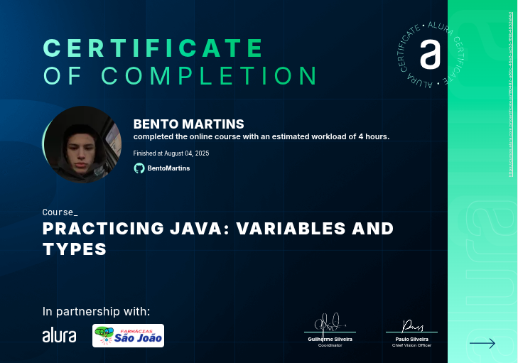
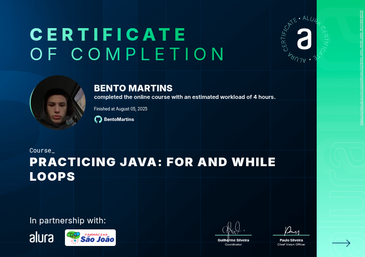
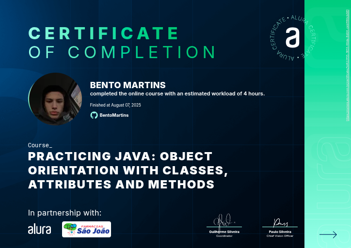
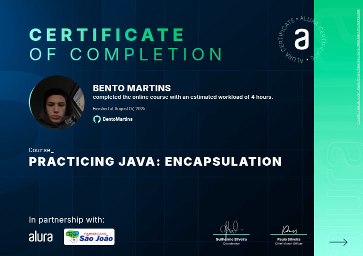
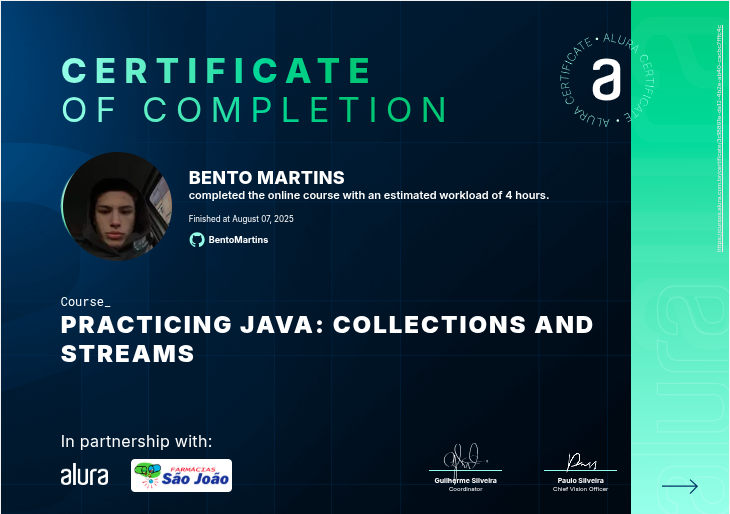
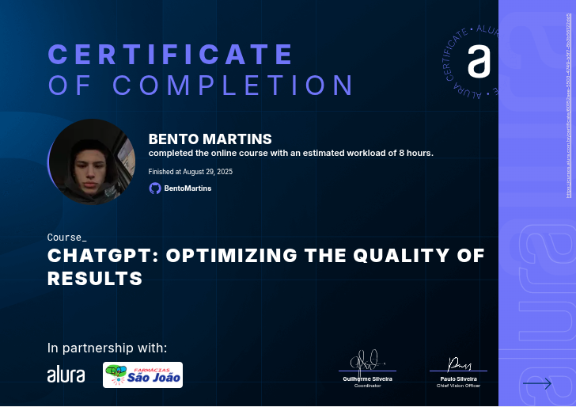
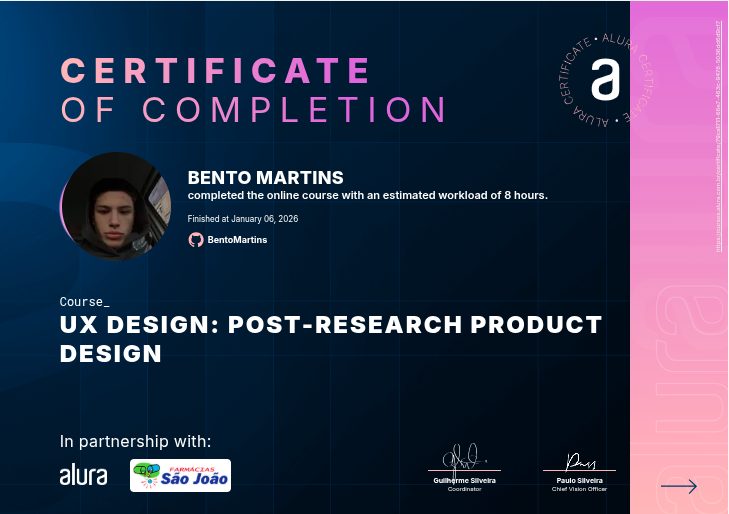
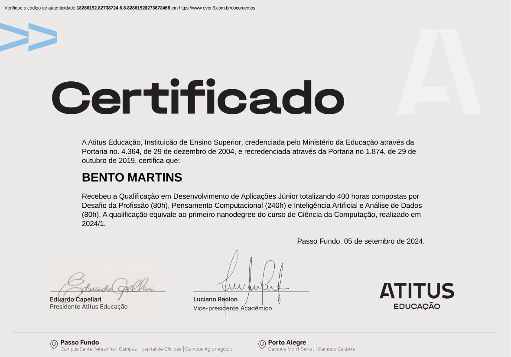

Sobre mim
Prazer, me chamo Bento Martins, moro e sou natural de Passo Fundo, RS e tenho 23 anos. Atualmente sou estudante de Ciência da Computação na Atitus Educação, e trabalho como estigário TI na Rede de Farmácias São João. Sou apaixonado por tecnologia e em constante busca por novas oportunidades de aprendizado e desenvolvimento profissional. Sou uma pessoa com grande vontade de aprender e aprimorar meus conhecimentos.
Experiências Profissionais
-
DAER - Passo Fundo – Auxiliar de Laboratório (2023 - 2025)
• Organização e arquivamento de documentos, garantindo a facilidade de acesso.
• Organização de documentos físicos e eletrônicos, mantendo registros atualizados.
• Acompanhamento de processos internos e externos, garantindo o cumprimento de prazos.
• Atualização de bases de dados e sistemas com informações recentes.
• Conferência e verificação de dados em relatórios e planilhas.
-
Farmácias São João – Estágio - Projetos e Desenvolvimento (2025 - Atualmente)
• Apoio em projetos de tecnologia da informação, colaborando com equipes de desenvolvimento e análise.
• Suporte na documentação de requisitos, fluxos e processos de sistemas.
• Apoio na identificação de melhorias em processos e rotinas operacionais de TI.
• Participação ativa na realização e execução de projetos de TI, apoiando desde o planejamento até a entrega.
• Acompanhamento do cronograma de projetos, auxiliando no cumprimento de prazos e metas.
Formação Acadêmica
- Escola Notre Dame Menino Jesus – Ensino Fundamental (2009 - 2017)
- Escola Notre Dame – Ensino Médio (2018 - 2020)
- Atitus Educação • Arquitetura e Urbanismo – Ensino Superior (2021 - 2022 (Incompleto))
- Atitus Educação • Ciência da Computação – Ensino Superior (2024 - 2027)
Certificados
-
Praticando Java: variáveis e tipos
 -
Praticando Java: condicionais if e else
-
Praticando Java: laços for e while
 -
Praticando Java: Orientação a Objetos com classes, atributos e métodos
 -
Praticando Java: herança, polimorfismo e interfaces
-
Praticando Java: encapsulamento
 -
Praticando Java: Strings e Regex
-
Praticando Java: data e hora

-
Praticando Java: coleções e streams
 -
Formação: Praticando Java
-
Java: criando a sua primeira aplicação
-
Aprendizagem: personalizando sua rotina de estudos com ChatGPT
-
Formação: Começando em Inteligência Artificial
-
ChatGPT: desvendando a IA em conversas e suas aplicações
-
Engenharia de Prompt: criando prompts eficazes para IA Generativa
-
ChatGPT: otimizando a qualidade dos resultados
 -
IA: explorando o potencial da inteligência artificial generativa
-
UX Design: entenda a área da User Experience
-
UX Design: como construir uma persona

-
UX Design: criando um portfólio em UX
-
UX Design: concepção do produto pós-pesquisa
 -
UX Design: elaborando projetos estratégicos
-
UI para devs: construindo interfaces animadas
-
AWS Academy Graduate - Introduction to Cloud Semester 1 - Training Badge - AWS Academy Introduction to Cloud Semester 1
-
Atitus Educação - Qualificação em Desenvolvimento de Aplicações Júnior
 -
Atitus Educação - Qualificação em Desenvolvimento de Soluções Full Stack
-
Atitus Educação - Qualificação em Arquitetura de Soluções em Cloud
-
MySQL com IA: criando o Banco de Dados
{kind=link}
{kind=link}
{kind=link}
{kind=link}
{kind=link}
{kind=link}
{kind=link}
{kind=link}
{kind=link}
{kind=link}
{kind=link}
{kind=link}
{kind=link}
{kind=link}
{kind=link}
{kind=link}
{kind=link}
{kind=link}
{kind=link}
{kind=link}
{kind=link}
{kind=link}
{kind=link}
{kind=link}
{kind=link}
Hard Skills

Java

JavaScript

Photoshop

HTML

CSS

Python

ReactNative

Figma
HTMX

PostgreSQL

Docker
Projetos
Swap Class
Swap Class foi um projeto desenvolvido para a graduação em Ciência da Computação na ATITUS Educação. O trabalho foi realizado por mim e por mais dois colegas. O Swap Class é um aplicativo voltado à venda e troca de itens usados, destinado exclusivamente a universitários de todo o Brasil, com o objetivo de facilitar a reutilização de produtos dentro do ambiente acadêmico. O aplicativo mobile foi desenvolvido em JavaScript, utilizando React Native, enquanto o backend do sistema foi implementado em Java, com o framework Spring Boot, e o banco de dados utilizado foi o PostgreSQL.
Happenize
Happenize foi um projeto acadêmico desenvolvido para a graduação em Ciência da Computação na ATITUS Educação. O Happenize é um aplicativo voltado à criação e participação em eventos, permitindo que qualquer pessoa organize ou participe de experiências diversas. A plataforma oferece múltiplas categorias e estilos de eventos, possibilitando ao usuário tanto explorar nichos de seu interesse quanto sair da sua zona de conforto e experimentar algo novo. O aplicativo foi desenvolvido exclusivamente no Figma, em nível de alta fidelidade, servindo como um protótipo conceitual. No entanto, há a possibilidade de que, futuramente, o projeto evolua para uma implementação em código